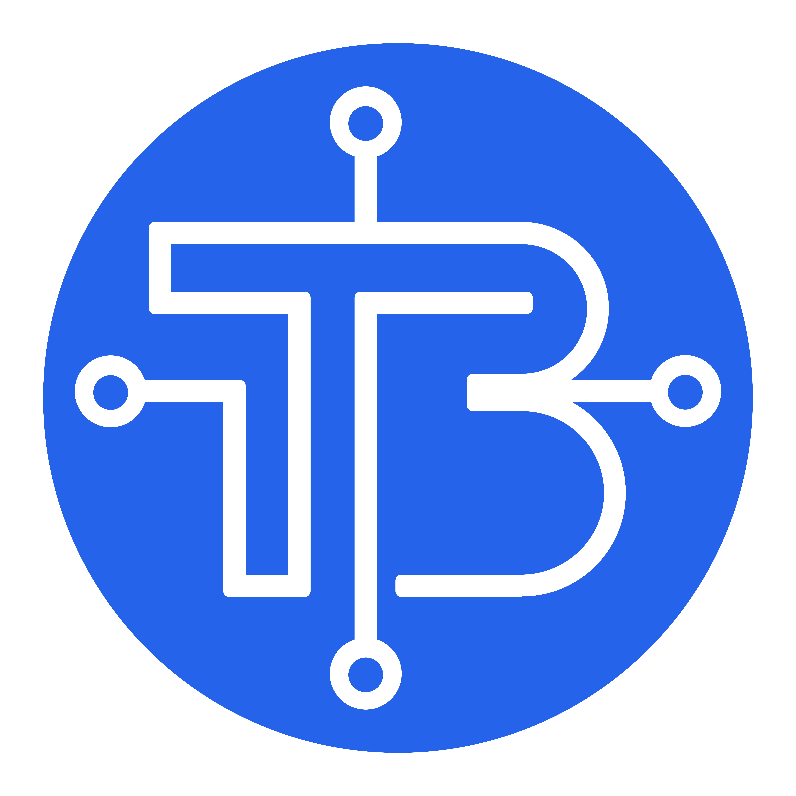

Acercando la ingeniería y el desarrollo de sistemas embebidos a estudiantes, makers y profesionales a través de contenido técnico avanzado.
Diseño de circuitos analógicos y digitales, PCBs y análisis de componentes.
Cinemática de brazos robóticos, servomotores y control de movimiento.
Desarrollo de firmware en C++, Python y optimización de código en microcontroladores.
Conectividad inalámbrica mediante MQTT, ESP32 y tableros en Node-RED.
Prototipado rápido, optimización de perfiles de impresión y piezas mecánicas.
Sistemas domóticos a escala, control industrial y lógica de relés.
> Comprende el funcionamiento fundamental del inversor lógico y cómo invierte las señales en tus circuitos electrónicos[cite: 1].
VER EN YOUTUBEPuedes ponerte en contacto a través de nuestras redes oficiales o correo para proyectos conjuntos y patrocinios.
Escríbenos directamente a nuestro correo de soporte o mediante nuestras redes sociales de YouTube y TikTok.
Desarrollamos sistemas embebidos, prototipos de hardware y automatización orientados a la educación y la industria.
> ¿Por qué son importantes?
Son los bloques fundamentales de todo sistema digital y microcontrolador. Haz clic en los interruptores de entrada (0 / 1) para interactuar con las compuertas y ver cómo transforman las señales eléctricas en lógica binaria.Invierte la señal de la Entrada A[cite: 1].
Activa solo si A y B están en 1.
Activa si A o B están en 1.
> ¿Tienes una idea o proyecto tecnológico en mente? ¡Conectemos sistemas!
[ IR AL CANAL DE YOUTUBE ] [ IR A TIKTOK ]